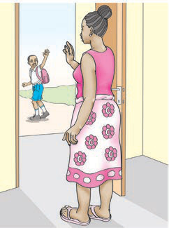
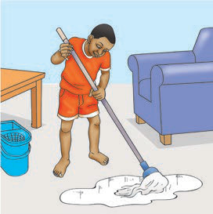

| Instructions | Actions in pictures | Oral or sign responses |
|---|---|---|
Open the door. |  | I am opening the door. |
Close the door. |  | I am closing the door. |
Go to school. |  | I am going to school. |
Mop the floor. |  | I am mopping the floor. |
| Instructions | Actions in pictures | Oral or sign responses |
|---|---|---|
Open the door. | | I am opening the door. |
Close the door. | | I am closing the door. |
Go to school. |  | I am going to school. |
Mop the floor. |  | I am mopping the floor. |